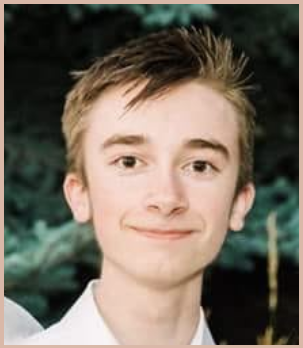

CV | Teaching | Research
Max Booth | Baltimore, MD, United States
Johns Hopkins University— Department of Applied Mathematics & Statistics

I am currently a PhD student in the Department of Applied Mathematics & Statistics at Johns Hopkins University. Previously, I studied Pure & Applied Mathematics as an Undergraduate at the University of Utah, and I worked as a Research Assistant under Profs. Elana Fertig and Genevieve Stein-O’Brien at the Johns Hopkins University School of Medicine. Broadly, I am interested in PDEs, Stochastic Analysis, and Applied Math in Data Science & Machine Learning.
Anybody here?? Hmmm, interesting…